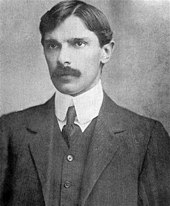
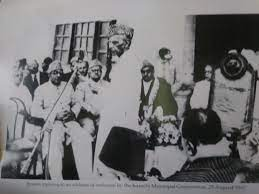
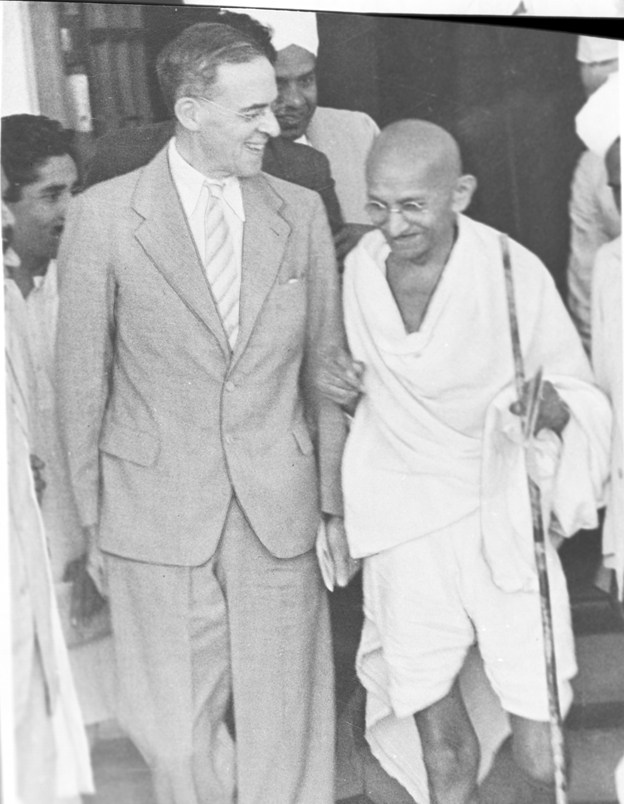
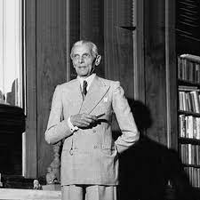

QUAID-E-AZAM MUHAMMAD ALI JINNAH
 Father of the NationQuaid-i-Azam Muhammad Ali Jinnah's achievement as the founder of Pakistan, dominates everything else he did in his long and crowded public life spanning some 42 years. Yet, by any standard, his was an eventful life, his personality multidimensional and his achievements in other fields were many, if not equally great. Indeed, several were the roles he had played with distinction: at one time or another, he was one of the greatest legal luminaries India had produced during the first half of the century, an `ambassador of Hindu-Muslim unity, a great constitutionalist, a distinguished parliamentarian, a top-notch politician, an indefatigable freedom-fighter, a dynamic Muslim leader, a political strategist and, above all one of the great nation-builders of modern times. What, however, makes him so remarkable is the fact that while similar other leaders assumed the leadership of traditionally well-defined nations and espoused their cause, or led them to freedom, he created a nation out of an inchoate and down-trodden minority and established a cultural and national home for it. And all that within a decade. For over three decades before the successful culmination in1947 , of the Muslim struggle for freedom in the South-Asian subcontinent, Jinnah had provided political leadership to the Indian Muslims: initially as one of the leaders, but later, since 1947, as the only prominent leader- the Quaid-i-Azam. For over thirty years, he had guided their affairs; he had given expression, coherence and direction to their legitimate aspirations and cherished dreams; he had formulated these into concrete demands; and, above all, he had striven all the while to get them conceded by both the ruling British and the numerous Hindus the dominant segment of India's population. And for over thirty years he had fought, relentlessly and inexorably, for the inherent rights of the Muslims for an honorable existence in the subcontinent. Indeed, his life story constitutes, as it were, the story of the rebirth of the Muslims of the subcontinent and their spectacular rise to nationhood, phoenixlike.phoenixlike.
Father of the NationQuaid-i-Azam Muhammad Ali Jinnah's achievement as the founder of Pakistan, dominates everything else he did in his long and crowded public life spanning some 42 years. Yet, by any standard, his was an eventful life, his personality multidimensional and his achievements in other fields were many, if not equally great. Indeed, several were the roles he had played with distinction: at one time or another, he was one of the greatest legal luminaries India had produced during the first half of the century, an `ambassador of Hindu-Muslim unity, a great constitutionalist, a distinguished parliamentarian, a top-notch politician, an indefatigable freedom-fighter, a dynamic Muslim leader, a political strategist and, above all one of the great nation-builders of modern times. What, however, makes him so remarkable is the fact that while similar other leaders assumed the leadership of traditionally well-defined nations and espoused their cause, or led them to freedom, he created a nation out of an inchoate and down-trodden minority and established a cultural and national home for it. And all that within a decade. For over three decades before the successful culmination in1947 , of the Muslim struggle for freedom in the South-Asian subcontinent, Jinnah had provided political leadership to the Indian Muslims: initially as one of the leaders, but later, since 1947, as the only prominent leader- the Quaid-i-Azam. For over thirty years, he had guided their affairs; he had given expression, coherence and direction to their legitimate aspirations and cherished dreams; he had formulated these into concrete demands; and, above all, he had striven all the while to get them conceded by both the ruling British and the numerous Hindus the dominant segment of India's population. And for over thirty years he had fought, relentlessly and inexorably, for the inherent rights of the Muslims for an honorable existence in the subcontinent. Indeed, his life story constitutes, as it were, the story of the rebirth of the Muslims of the subcontinent and their spectacular rise to nationhood, phoenixlike.phoenixlike.
Early life of QUAID-E-AZAM MUHAMMAD ALI JINNAH

Born on December 25, 1876, in a prominent mercantile family in Karachi and educated at the Sindh Madrassat-ul-Islam and the Christian Mission School at is birth place, Jinnah joined the Lincoln's Inn in 1893 to become the youngest Indian to be called to the Bar, three years later. Starting out in the legal profession with nothing to fall back upon except his native ability and determination, young Jinnah rose to prominence and became Bombay's most successful lawyer, as few did, within a few years. Once he was firmly established in the legal profession, Jinnah formally entered politics in 1905 from the platform of the Indian National Congress. He went to England in that year along with Gopal Krishna Gokhale , as a member of a Congress delegation to plead the cause of Indian self-government during the British elections. A year later, he served as Secretary to Dadabhai Noaroji (1825-1917), the then Indian National Congress President, which was considered a great honor for a budding politician. Here, at the Calcutta Congress session (December 1906), he also made his first political speech in support of the resolution on self-government.
Political Career
 Three years later, in January 1910, Jinnah was elected to the newly-constituted Imperial Legislative Council. All through his parliamentary career, which spanned some four decades, he was probably the most powerful voice in the cause of Indian freedom and Indian rights. Jinnah, who was also the first Indian to pilot a private member's Bill through the Council, soon became a leader of a group inside the legislature. Mr. Montagu (1879-1924), Secretary of State for India, at the close of the First World War, considered Jinnah "perfect mannered, impressive-looking, armed to the teeth with dialectics..."Jinnah, he felt, "is a very clever man, and it is, of course, an outrage that such a man should have no chance of running the affairs of his own country.
Three years later, in January 1910, Jinnah was elected to the newly-constituted Imperial Legislative Council. All through his parliamentary career, which spanned some four decades, he was probably the most powerful voice in the cause of Indian freedom and Indian rights. Jinnah, who was also the first Indian to pilot a private member's Bill through the Council, soon became a leader of a group inside the legislature. Mr. Montagu (1879-1924), Secretary of State for India, at the close of the First World War, considered Jinnah "perfect mannered, impressive-looking, armed to the teeth with dialectics..."Jinnah, he felt, "is a very clever man, and it is, of course, an outrage that such a man should have no chance of running the affairs of his own country.
For about three decades since his entry into politics in 1906, Jinnah passionately believed in and assiduously worked for Hindu-Muslim unity. Gokhale, the foremost Hindu leader before Gandhi, had once said of him, "He has the true stuff in him and that freedom from all sectarian prejudice which will make him the best ambassador of Hindu-Muslim Unity: And, to be sure, he did become the architect of Hindu-Muslim Unity: he was responsible for the Congress-League Pact of 1916, known popularly as Luck now Pact- the only pact ever signed between the two political organizations, the Congress and the All-India Muslim League, representing, as they did, the two major communities in the subcontinen
The Congress-League scheme embodied in this pact was to become the basis for the Montagu-Chemlsford Reforms, also known as the Act of 1919. In retrospect, the Luckhnow Pact represented a milestone in the evolution of Indian politics. For one thing, it conceded Muslims the right to separate electorate, reservation of seats in the legislatures and weightage in representation both at the Centre and the minority provinces. Thus, their retention was ensured in the next phase of reforms. For another, it represented a tacit recognition of the All-India Muslim League as the representative organization of the Muslims, thus strengthening the trend towards Muslim individuality in Indian politics. And to Jinnah goes the credit for all this. Thus, by 1917, Jinnah came to be recognized among both Hindus and Muslims as one of India's most outstanding political leaders. Not only was he prominent in the Congress and the Imperial Legislative Council, he was also the President of the All-India Muslim League and that of the Bombay Branch of the Home Rule League. More importantly, because of his key-role in the Congress-League entente at Luckhnow, he was hailed as the ambassador, of Hindu-Muslim unity.
Constitutional Struggle

In subsequent years, however, he felt dismayed at the injection of violence into politics. Since Jinnah stood for "ordered progress", moderation, gradualism and constitutionalism, he felt that political violence was not the pathway to national liberation but, the dark alley to disaster and destruction.
In the ever-growing frustration among the masses caused by colonial rule, there was ample cause for extremism. But, Gandhi's doctrine of non-cooperation, Jinnah felt, even as Rabindranath Tagore(1861-1941) did also feel, was at best one of negation and despair: it might lead to the building up of resentment, but nothing constructive. Hence, he opposed tooth and nail the tactics adopted by Gandhi to exploit the Khilafat and wrongful tactics in the Punjab in the early twenties. On the eve of its adoption of the Gandhian programmed, Jinnah warned the Nagpur Congress Session (1920): "you are making a declaration (of Swaraj within a year) and committing the Indian National Congress to a programme, which you will not be able to carry out". He felt that there was no short-cut to independence and that any extra-constitutional methods could only lead to political violence, lawlessness and chaos, without bringing India nearer to the threshold of freedom.
The future course of events was not only to confirm Jinnah's worst fears, but also to prove him right. Although Jinnah left the Congress soon thereafter, he continued his efforts towards bringing about a Hindu-Muslim entente, which he rightly considered "the most vital condition of Swaraj". However, because of the deep distrust between the two communities as evidenced by the country-wide communal riots, and because the Hindus failed to meet the genuine demands of the Muslims, his efforts came to naught. One such effort was the formulation of the Delhi Muslim Proposals in March, 1927. In order to bridge Hindu-Muslim differences on the constitutional plan, these proposals even waived the Muslim right to separate electorate, the most basic Muslim demand since 1906, which though recognized by the Congress in the Luckhnow Pact, had again become a source of friction between the two communities. surprisingly though, the Nehru Report (1928), which represented the Congress-sponsored proposals for the future constitution of India, negated the minimum Muslim demands embodied in the Delhi Muslim Proposals.
n vain Jinnah argued at the National Convention of Congress in 1928 that "What we want is that Hindus and Mussalmans should march together until our objective is achieved...These two communities have got to be reconciled and united and made to feel that their interests are common". The Convention's blank refusal to accept Muslim demands represented the most devastating setback to Jinnah's life-long efforts to bring about Hindu-Muslim unity, it meant "the last straw" for the Muslims, and "the parting of the ways" for him, as he confessed to a Parsee friend at that time. Jinnah's disillusionment at the course of politics in the subcontinent prompted him to migrate and settle down in London in the early thirties. He was, however, to return to India in 1934, at the pleadings of his co-religionists, and assume their leadership. But, the Muslims presented a sad spectacle at that time. They were a mass of disgruntled and demoralized men and women, politically disorganized and destitute of a clear-cut political programme.
Muslim League Reorganized
 Thus, the task that awaited Jinnah was anything but easy. The Muslim League was dormant: even its provincial organizations were, for the most part, ineffective and only nominally under the control of the central organization. Nor did the central body have any coherent policy of its own till the Bombay session (1936), which Jinnah organized. To make matters worse, the provincial scene presented a sort of a jigsaw puzzle: in the Punjab, Bengal, Sindh, the North West Frontier, Assam, Bihar and the United Provinces, various Muslim leaders had set up their own provincial parties to serve their personal ends. Extremely frustrating as the situation was, the only consolation Jinnah had at this juncture was in Allama Iqbal (1877-1938), the poet-philosopher, who stood steadfast by him and helped to chart the course of Indian politics from behind the scene.
Thus, the task that awaited Jinnah was anything but easy. The Muslim League was dormant: even its provincial organizations were, for the most part, ineffective and only nominally under the control of the central organization. Nor did the central body have any coherent policy of its own till the Bombay session (1936), which Jinnah organized. To make matters worse, the provincial scene presented a sort of a jigsaw puzzle: in the Punjab, Bengal, Sindh, the North West Frontier, Assam, Bihar and the United Provinces, various Muslim leaders had set up their own provincial parties to serve their personal ends. Extremely frustrating as the situation was, the only consolation Jinnah had at this juncture was in Allama Iqbal (1877-1938), the poet-philosopher, who stood steadfast by him and helped to chart the course of Indian politics from behind the scene.
Undismayed by this bleak situation, Jinnah devoted himself to the sole purpose of organizing the Muslims on one platform. He embarked upon country-wide tours. He pleaded with provincial Muslim leaders to sink their differences and make common cause with the League. He exhorted the Muslim masses to organize themselves and join the League. He gave coherence and direction to Muslim sentiments on the Government of India Act, 1935. He advocated that the Federal Scheme should be scrapped as it was subversive of India's cherished goal of complete responsible Government, while the provincial scheme, which conceded provincial autonomy for the first time, should be worked for what it was worth, despite its certain objectionable features. He also formulated a viable League manifesto for the election scheduled for early 1937. He was, it seemed, struggling against time to make Muslim India a power to be reckoned with.
Despite all the manifold odds stacked against it, the Muslim League won some 108 (about 23 per cent) seats out of a total of 485 Muslim seats in the various legislatures. Though not very impressive in itself, the League's partial success assumed added significance in view of the fact that the League won the largest number of Muslim seats and that it was the only all-India party of the Muslims in the country. Thus, the elections represented the first milestone on the long road to putting Muslim India on the map of the subcontinent. Congress in power with the year 1937 opened the most momentous decade in modern Indian history. In that year came into force the provincial part of the Government of India Act, 1935, granting autonomy to Indians for the first time, in the provinces.
The Congress, having become the dominant party in Indian politics, came to power in seven provinces exclusively, spurning the League's offer of cooperation, turning its back finally on the coalition idea and excluding Muslims as a political entity from the portals of power. In that year, also, the Muslim League, under Jinnah's dynamic leadership, was reorganized de novo, transformed into a mass organization, and made the spokesman of Indian Muslims as never before. Above all, in that momentous year were initiated certain trends in Indian politics, the crystallization of which in subsequent years made the partition of the subcontinent inevitable. The practical manifestation of the policy of the Congress which took office in July, 1937, in seven out of eleven provinces, convinced Muslims that, in the Congress scheme of things, they could live only on sufferance of Hindus and as "second class" citizens. The Congress provincial governments, it may be remembered, had embarked upon a policy and launched a programme in which Muslims felt that their religion, language and culture were not safe. This blatantly aggressive Congress policy was seized upon by Jinnah to awaken the Muslims to a new consciousness, organize them on all-India platform, and make them a power to be reckoned with. He also gave coherence, direction and articulation to their innermost, yet vague, urges and aspirations. Above all, he filled them with his indomitable will, his own unflinching faith in their destiny.
The New Awakening
As a result of Jinnah's ceaseless efforts, the Muslims awakened from what Professor Baker calls (their) "unreflective silence" (in which they had so complacently basked for long decades), and to "the spiritual essence of nationality" that had existed among them for a pretty long time. Roused by the impact of successive Congress hammerings, the Muslims, as Ambedkar (principal author of independent India's Constitution) says, "searched their social consciousness in a desperate attempt to find coherent and meaningful articulation to their cherished yearnings. To their great relief, they discovered that their sentiments of nationality had flamed into nationalism". In addition, not only had they developed" the will to live as a "nation", had also endowed them with a territory which they could occupy and make a State as well as a cultural home for the newly discovered nation. These two pre-requisites provided the Muslims with the intellectual justification for claiming a distinct nationalism (apart from Indian or Hindu nationalism) for themselves. So that when, after their long pause, the Muslims gave expression to their innermost yearnings, these turned out to be in favour of a separate Muslim nationhood and of a separate Muslim state.
Demand for Pakistan
 We are a nation", they claimed in the ever eloquent words of the Quaid-i-Azam- "We are a nation with our own distinctive culture and civilization, language and literature, art and architecture, names and nomenclature, sense of values and proportion, legal laws and moral code, customs and calendar, history and tradition, aptitudes and ambitions; in short, we have our own distinctive outlook on life and of life. By all canons of international law, we are a nation". The formulation of the Muslim demand for Pakistan in 1940 had a tremendous impact on the nature and course of Indian politics. On the one hand, it shattered for ever the Hindu dreams of a pseudo-Indian, in fact, Hindu empire on British exit from India: on the other, it heralded an era of Islamic renaissance and creativity in which the Indian Muslims were to be active participants. The Hindu reaction was quick, bitter, and malicious.
Equally hostile were the British to the Muslim demand, their hostility having stemmed from their belief that the unity of India was their main achievement and their foremost contribution. The irony was that both the Hindus and the British had not anticipated the astonishingly tremendous response that the Pakistan demand had elicited from the Muslim masses. Above all, they failed to realize how a hundred million people had suddenly become supremely conscious of their distinct nationhood and their high destiny. In channeling the course of Muslim politics towards Pakistan, no less than in directing it towards its consummation in the establishment of Pakistan in 1947, none played a more decisive role than did Quaid-i-Azam Muhammad Ali Jinnah. It was his powerful advocacy of the case of Pakistan and his remarkable strategy in the delicate negotiations that followed the formulation of the Pakistan demand, particularly in the post-war period, that made Pakistan inevitable.
We are a nation", they claimed in the ever eloquent words of the Quaid-i-Azam- "We are a nation with our own distinctive culture and civilization, language and literature, art and architecture, names and nomenclature, sense of values and proportion, legal laws and moral code, customs and calendar, history and tradition, aptitudes and ambitions; in short, we have our own distinctive outlook on life and of life. By all canons of international law, we are a nation". The formulation of the Muslim demand for Pakistan in 1940 had a tremendous impact on the nature and course of Indian politics. On the one hand, it shattered for ever the Hindu dreams of a pseudo-Indian, in fact, Hindu empire on British exit from India: on the other, it heralded an era of Islamic renaissance and creativity in which the Indian Muslims were to be active participants. The Hindu reaction was quick, bitter, and malicious.
Equally hostile were the British to the Muslim demand, their hostility having stemmed from their belief that the unity of India was their main achievement and their foremost contribution. The irony was that both the Hindus and the British had not anticipated the astonishingly tremendous response that the Pakistan demand had elicited from the Muslim masses. Above all, they failed to realize how a hundred million people had suddenly become supremely conscious of their distinct nationhood and their high destiny. In channeling the course of Muslim politics towards Pakistan, no less than in directing it towards its consummation in the establishment of Pakistan in 1947, none played a more decisive role than did Quaid-i-Azam Muhammad Ali Jinnah. It was his powerful advocacy of the case of Pakistan and his remarkable strategy in the delicate negotiations that followed the formulation of the Pakistan demand, particularly in the post-war period, that made Pakistan inevitable.
Cripps Scheme

While the British reaction to the Pakistan demand came in the form of the Cripps offer of April, 1942, which conceded the principle of self-determination to provinces on a territorial basis, the Rajaji Formula (called after the eminent Congress leader C.Rajagopalacharia, which became the basis of prolonged Jinnah-Gandhi talks in September, 1944), represented the Congress alternative to Pakistan. The Cripps offer was rejected because it did not concede the Muslim demand the whole way, while the Rajaji Formula was found unacceptable since it offered a "moth-eaten, mutilated" Pakistan and the too appended with a plethora of pre-conditions which made its emergence in any shape remote, if not altogether impossible. Cabinet Mission, the most delicate as well as the most tortuous negotiations, however, took place during 1946-47, after the elections which showed that the country was sharply and somewhat evenly divided between two parties- the Congress and the League- and that the central issue in Indian politics was Pakistan.
These negotiations began with the arrival, in March 1946, of a three-member British Cabinet Mission. The crucial task with which the Cabinet Mission was entrusted was that of devising in consultation with the various political parties, constitution-making machinery, and of setting up a popular interim government. But, because the Congress-League gulf could not be bridged, despite the Mission's (and the Viceroy's) prolonged efforts, the Mission had to make its own proposals in May, 1946. Known as the Cabinet Mission Plan, these proposals stipulated a limited centre, supreme only in foreign affairs, defense and communications and three autonomous groups of provinces. Two of these groups were to have Muslim majorities in the north-west and the north-east of the subcontinent, while the third one, comprising the Indian mainland, was to have a Hindu majority. A consummate statesman that he was, Jinnah saw his chance. He interpreted the clauses relating to a limited centre and the grouping as "the foundation of Pakistan", and induced the Muslim League Council to accept the Plan in June 1946; and this he did much against the calculations of the Congress and to its utter dismay.
Tragically though, the League's acceptance was put down to its supposed weakness and the Congress put up a posture of defiance, designed to swamp the League into submitting to its dictates and its interpretations of the plan. Faced thus, what alternative had Jinnah and the League but to rescind their earlier acceptance, reiterate and reaffirm their original stance, and decide to launch direct action (if need be) to wrest Pakistan. The way Jinnah maneuvered to turn the tide of events at a time when all seemed lost indicated, above all, his masterly grasp of the situation and his adeptness at making strategic and tactical moves.
Partition Plan
Partition Plan By the close of 1946, the communal riots had flared up to murderous heights, engulfing almost the entire subcontinent. The two peoples, it seemed, were engaged in a fight to the finish. The time for a peaceful transfer of power was fast running out. Realizing the gravity of the situation. His Majesty's Government sent down to India a new Viceroy- Lord Mountbatten. His protracted negotiations with the various political leaders resulted in 3 June (1947) Plan by which the British decided to partition the subcontinent, and hand over power to two successor States on 15 August, 1947. The plan was duly accepted by the three Indian parties to the dispute- the Congress the League and the Akali Dal (representing the Sikhs)
Leader of a Free Nation

In recognition of his singular contribution, Quaid-i-Azam Muhammad Ali Jinnah was nominated by the Muslim League as the Governor-General of Pakistan, while the Congress appointed Mountbatten as India's first Governor-General. Pakistan, it has been truly said, was born in virtual chaos. Indeed, few nations in the world have started on their career with less resources and in more treacherous circumstances. The new nation did not inherit a central government, a capital, an administrative core, or an organized defence force. The Punjab holocaust had left vast areas in a shambles with communications disrupted. This, alongwith the en masse migration of the Hindu and Sikh business and managerial classes, left the economy almost shattered.
The treasury was empty, India having denied Pakistan the major share of its cash balances. On top of all this, the still unorganized nation was called upon to feed some eight million refugees who had fled the insecurities and barbarities of the north Indian plains that long, hot summer. If all this was symptomatic of Pakistan's administrative and economic weakness, the Indian annexation, through military action in November 1947, of Junagadh (which had originally acceded to Pakistan) and the Kashmir war over the State's accession (October 1947-December 1948) exposed her military weakness. In the circumstances, therefore, it was nothing short of a miracle that Pakistan survived at all. That it survived and forged ahead was mainly due to one man-Muhammad Ali Jinnah. The nation desperately needed a charismatic leader at that critical juncture in the nation's history, and he fulfilled that need profoundly. After all, he was more than a mere Governor-General: he was the Quaid-i-Azam who had brought the State into being.
In the ultimate analysis, his very presence at the helm of affairs was responsible for enabling the newly born nation to overcome the terrible crisis on the morrow of its cataclysmic birth. He mustered up the immense prestige and the unquestioning loyalty he commanded among the people to energize them, to raise their morale, to raise the profound feelings of patriotism that the freedom had generated, along constructive channels. Though tired and in poor health, Jinnah yet carried the heaviest part of the burden in that first crucial year. He laid down the policies of the new state, called attention to the immediate problems confronting the nation and told the members of the Constituent Assembly, the civil servants and the Armed Forces what to do and what the nation expected of them. He saw to it that law and order was maintained at all costs, despite the provocation that the large-scale riots in north India had provided. He moved from Karachi to Lahore for a while and supervised the immediate refugee problem in the Punjab. In a time of fierce excitement, he remained sober, cool and steady. He advised his excited audience in Lahore to concentrate on helping the refugees, to avoid retaliation, exercise restraint and protect the minorities. He assured the minorities of a fair deal, assuaged their inured sentiments, and gave them hope and comfort. He toured the various provinces, attended to their particular problems and instilled in the people a sense of belonging. He reversed the British policy in the North-West Frontier and ordered the withdrawal of the troops from the tribal territory of Waziristan, thereby making the Pathans feel themselves an integral part of Pakistan's body-politics. He created a new Ministry of States and Frontier Regions, and assumed responsibility for ushering in a new era in Balochistan. He settled the controversial question of the states of Karachi, secured the accession of States, especially of Kalat which seemed problematical and carried on negotiations with Lord Mountbatten for the settlement of the Kashmir Issue.